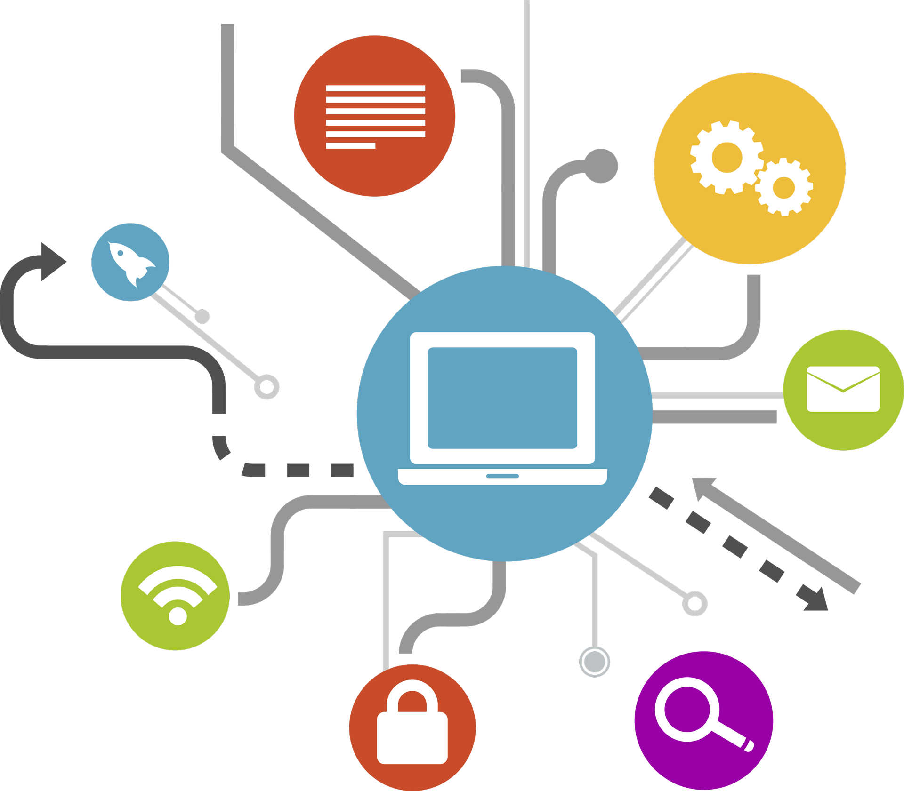

Dependencias tecnológicas
¿Que son?
Es un tipo de adicción en la que una persona no puede prescindir del uso de determinadas tecnologías y
dispositivos.
¿Como afectan?
Esta adicción puede llevar a que uno pierda por completo la capacidad de funcionar sin estas tecnologías...
Lo que puede tener un grave impacto negativo en su calidad de vida. He aqui que otras cosas que son lo que apoyan a esta adicción:
- Redes sociales y mensajeros: Las personas pueden pasar demasiado tiempo en las redes sociales y los mensajeros, reduciendo el tiempo que pasan en el mundo real. Además, esto les lleva a depender de actualizaciones constantes de noticias y mensajes.
- Teléfonos inteligentes y tabletas: Los teléfonos inteligentes y las tabletas pueden convertirse en la principal forma de comunicarse con el mundo, y la gente puede volverse dependiente de comprobar constantemente las notificaciones, retuitear y navegar por las redes sociales y los mensajeros.
- Juegos y entretenimiento en línea: Los juegos y el ocio en línea pueden crear adicción y llevar a la gente a pasar demasiado tiempo en el mundo virtual en lugar de en la vida real.
- Servicios de vídeo y streaming en línea: las personas pueden pasar demasiado tiempo en sitios web de alojamiento de vídeos y servicios de streaming, lo que puede provocar una pérdida de tiempo y un menor interés por el mundo real.
- Compras por Internet y compras en línea: Las personas pueden volverse adictas a las compras en línea, sobre todo si las utilizan para satisfacer necesidades emocionales.
- Programas y aplicaciones informáticas: Las personas pueden volverse adictas a determinados programas y aplicaciones que pueden distraerlas de su trabajo o sus estudios.
- Tecnologías de Inteligencia Artificial: las personas pueden volverse dependientes del uso de tecnologías de inteligencia artificial, como los asistentes de voz, lo que puede provocar la degradación de las capacidades de comunicación y toma de decisiones.
- Dispositivos domésticos inteligentes: las personas pueden volverse dependientes del uso de dispositivos domésticos inteligentes, como los asistentes de voz, lo que puede provocar la degradación de las capacidades de comunicación y toma de decisiones.
- Criptomonedas y blockchain: la gente puede volverse adicta al amasijo de criptodivisas, lo que pone en peligro su estabilidad financiera.
- Tecnologías de realidad virtual y aumentada: las personas pueden volverse dependientes del uso de las tecnologías de realidad virtual y aumentada, lo que puede provocar una disminución del interés por el mundo real y la degradación de las habilidades comunicativas.

¿Como combatir la adicción a las tecnologías?
Para combatir la adicción a la tecnología electrónica se debe tener en cuenta las siguientes estrategias:
- Establecer límites sobre el tiempo que pasas en línea/en tus dispositivos.
- Diversifique sus intereses y actividades y actividades más allá del uso de la tecnología.
- Busca nuevas formas de conectar con el mundo que te rodea para reducir tu dependencia de las redes sociales y la mensajería.
- Crea espacios tecnológicamente libres en el hogar, como la mesa del comedor o el dormitorio.
- Si es posible, programa un tiempo libre de tecnología para relajarse y desconectar.
- Intenta ser más consciente del uso que haces de la tecnología. Deberías preguntarte de vez en cuando: ¿me estoy volviendo demasiado dependiente de la tecnología?
- Intenta limitar el tiempo que pasas en el trabajo con el ordenador y tomar descansos (si es posible). Esto reducirá la tensión en tus ojos y te ayudará a despejar la mente antes de la siguiente sesión de trabajo.
Clima y predicción
Es importante mantener un equilibrio saludable entre el uso de la tecnología y la vida real.